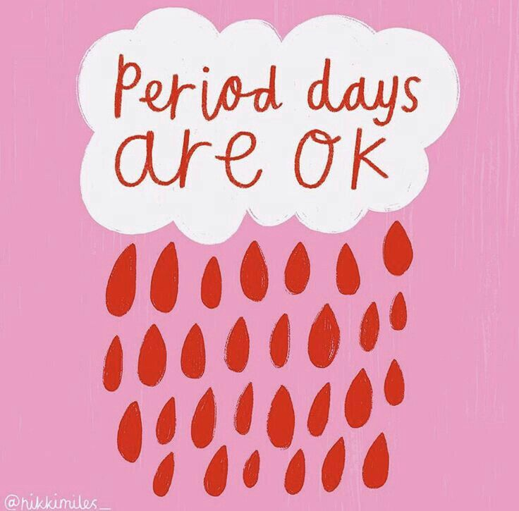

What Is a Period?
A simple guide to what’s happening in your body.

What a period is
A period is a normal part of growing up. It's one way your body changes as you get older, and learning about it can help you feel more prepared, more confident, and a lot less confused. This page is here to make things feel a little easier to understand — without shame, awkwardness, or information overload.
So... what actually happens?
A period is when blood and tissue leave the body about once a month. It happens because your body is growing and changing.
At first, it can feel surprising, annoying, awkward, or even scary — especially if no one has really explained it to you. But having a period is completely normal, and over time, it usually becomes something you understand better and feel more prepared for.
Why it matters
Learning about periods can help you:
- Feel less confused
- Know what is normal for your body
- Feel more prepared
- Know when to ask for help
Everyone’s body is different. If something worries you, talking to a trusted adult or healthcare provider is always okay.
Still have questions?
Keep exploring—there’s more friendly info just a click away.